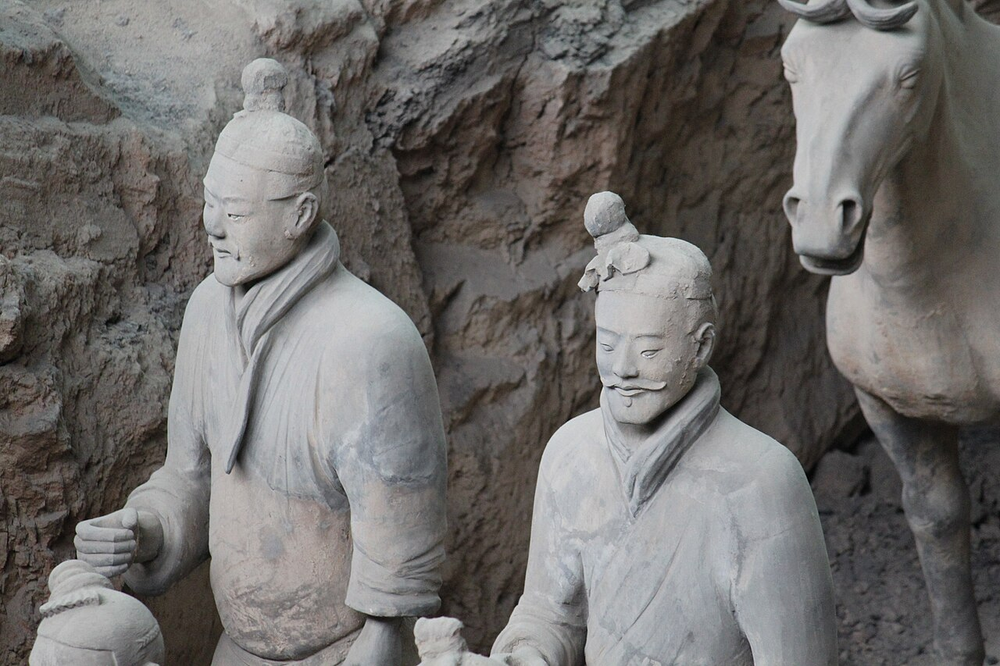
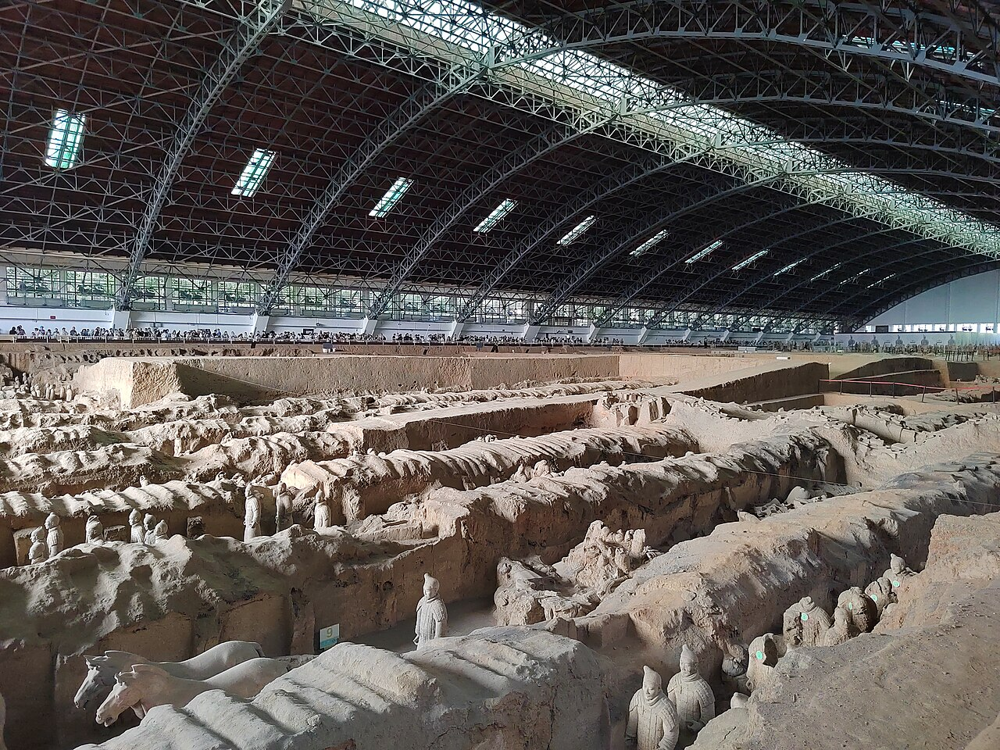
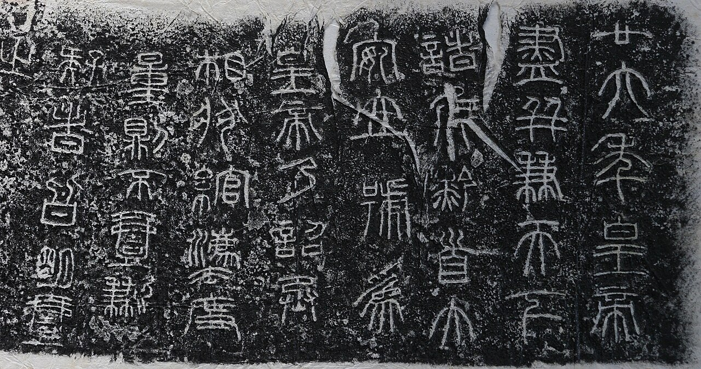
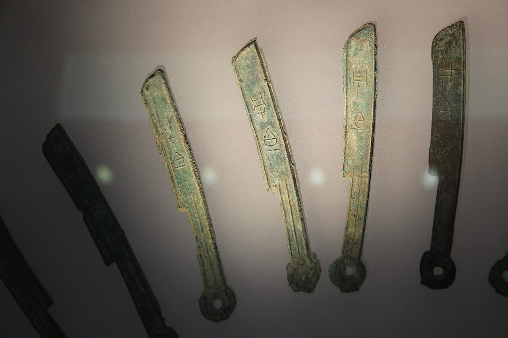
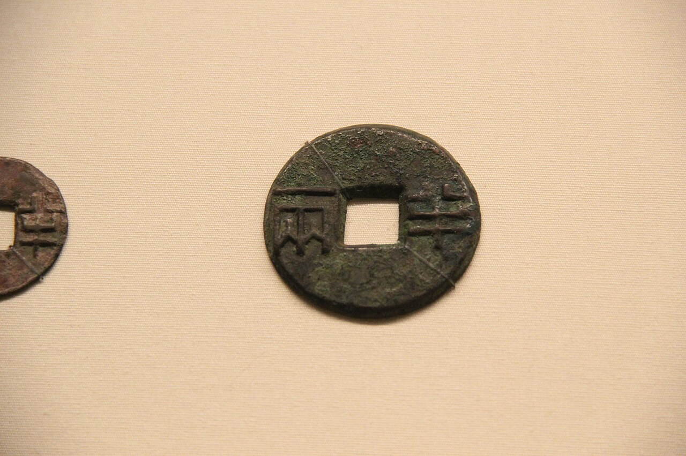
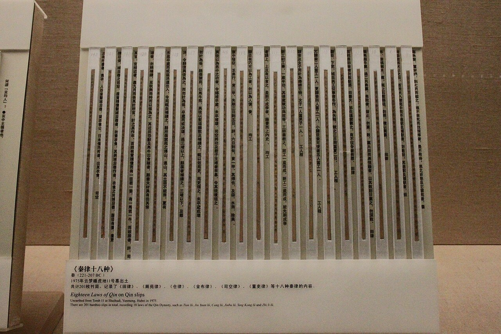
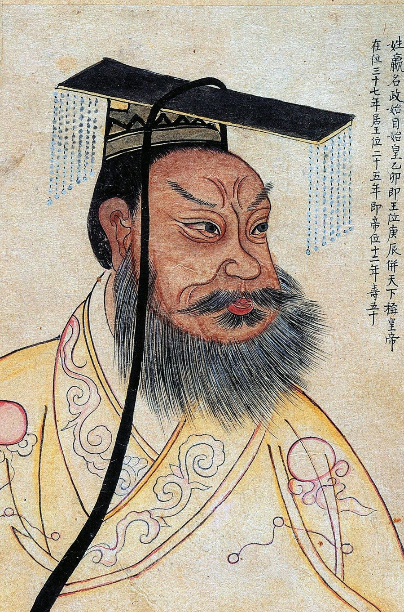
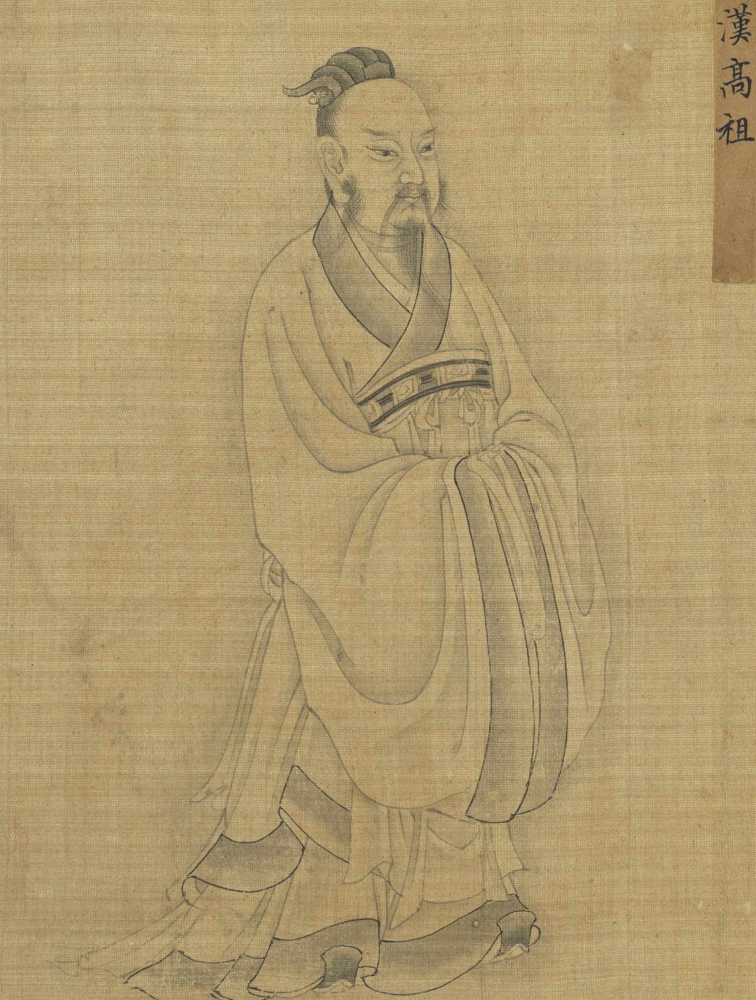

歴史・地理 History & Geography秦の始皇帝は、 中国を どうやって 1つにした？ 前221年、中国の西の国・秦が、争っていた国々を1つにまとめました。秦そのものはわずか15年で倒れますが、秦がそろえた文字やお金、治め方は、そのあとも長く中国を1つにし続けます。統一の地図と、統一の前後をくらべた図で、そのしくみをのぞいてみませんか。
2026.11.10 UP 約8分で読める 文：SOMOSOMO編集部
写真：兵馬俑の兵士と馬／Gary Lee Todd（2011年、CC0）
Previously
前回は、ローマが負かした相手を同盟国にして兵を出させるしくみで勢力を広げ、カルタゴに勝って地中海を手に入れた話でした。ローマはアウグストゥスのもとで帝国になり、180年ごろまで「ローマの平和」が続きます。そのローマがハンニバルと戦い始める3年前、ユーラシアの東の端で、一つの大きな国が生まれました。
中国の古都・西安の東の郊外で、1974年3月29日。井戸を掘っていた村の農民たちが、土の中から焼き物の人の像を掘り当てました。そこは、2,200年ほど前に亡くなった王の墓の盛り土から、東へ1.5キロほどの場所。のちに「兵馬俑（へいばよう）」と呼ばれる、等身大の兵士の像の列の一部でした。
3つの穴に埋められた兵士の像は、2007年の推計で8,000体をこえ、その多くはいまも土の中です。墓の主は、秦（しん）の始皇帝。それまで7つの大きな国が争っていた中国を、前221年に一つにまとめた王です。ばらばらだった中国を、秦はどうやって1つにしたのでしょうか。
In a word
戦に勝った あと、文字やはかり、治め方まで1つにそろえた から。
01
A Kingdom of Merit
手柄で身分が 決まる国が、 6つの国を 飲みこんだ
第3話で見たように、周の王の力が弱まると、中国は各地の有力な国が争う時代に入りました。前5世紀ごろからの戦国時代には、7つの大きな国が王を名乗ります。西の秦、東の斉（せい）、南の楚（そ）、北の燕（えん）、そして中ほどの韓（かん）・魏（ぎ）・趙（ちょう）です。
秦は、そのいちばん西にありました。都の咸陽（かんよう。いまの西安の近く）がある盆地は、山に守られた肥えた土地です。それでも秦は、長いあいだ目立たない国でした。変わったのは前4世紀、よその国から来た一人の男が、国の決まりを作り直してからです。
男の名は商鞅（しょうおう）。前359年に秦に仕え、前356年と前350年に大きな改革を行いました。軍には20の位を設け、戦場での手柄で位が上がるようにします。位に応じて、家や土地が与えられました。生まれた家柄ではなく、働きで身分が決まるしくみです。
人々は5つの家ずつの組に分けられ、組の中で悪いことをした人がいれば知らせる責任を負いました。罪を知りながら知らせない人は、罪を犯した人と同じ罰を受けます。2人以上の息子が同じ家に住めば税を倍にして、大きな一族を小さな家に分けました。
法と賞と罰で国を動かすこうした考えは、のちに法家（ほうか）と呼ばれます。第6話で見た孔子の教えが、王の徳や礼を重んじたのとは反対の行き方でした。改革のもとで秦は畑を広げ、大きな軍を養える国になっていきます。

土の溝に並ぶ軍勢 兵馬俑の1号坑の全景です。大きな屋根の下に長い溝が何本も掘られ、その中に兵士や馬の像が列をなしています。秦の大きな軍を、焼き物で写したものです。写真：Terracotta Army - Pit 1 20240806 06 ／沈澄心（2024年、CC0）
ただ、商鞅は貴族たちの恨みを買い、後ろ盾の君主が亡くなると、前338年に処刑されます。それでも、改革のしくみは秦に残りました。
前246年、13歳で王になった政（せい。のちの始皇帝）は、前230年から東の国々を攻め始めます。韓、趙、燕、魏、楚と都を次々に落とし、前221年、最後に残った斉を降伏させました。10年足らずで、6つの国が秦に飲みこまれました。
Fig.01 西の秦が、 東へ6つの国を 落としていった
黄河
長江
黄海
秦 咸陽
韓 前230
趙 前228
燕 前226
魏 前225
楚 前223
斉 前221
秦の都
6つの国の都（年は都が落ちた年）
見どころは、秦が西の咸陽から、近い韓を手始めに、北の趙と燕、中ほどの魏、南の楚、東の斉へと、9年で攻め進んだこと。点は各国の都で、年は都が落ちた年です（趙と燕は北で生きのび、前222年に滅びました）。地図は Natural Earth（パブリックドメイン）から作りました。
政は、伝説の君主たちの呼び名を合わせて「皇帝」という称号を作り、自らを始皇帝（最初の皇帝）と名乗ります。けれども、戦に勝つことと、1つの国として治め続けることは、別の話でした。
02
One Standard
勝ったあと、 国じゅうの 「ものさし」を そろえた
7つの国は、字の形もお金も、ものの量り方もばらばらでした。そこで始皇帝と、宰相（王を助けて政治をまとめる大臣）の李斯（りし）は、国じゅうの「ものさし」を秦の形にそろえていきます。
まず文字です。戦国時代、字の形は国ごとに少しずつずれていきました。秦の字は、その中で昔の形をいちばんよく残していました。統一のあと、秦の字をもとにした形が国の決まりの字になります。のちに小篆（しょうてん）と呼ばれる字です。話し言葉が違う地方どうしでも、同じ字で書き合えるようになりました。

おもりに刻まれた、皇帝の命令 秦の青銅のおもりに刻まれた字を、紙に写し取った拓本です。小篆で書かれ、右端の列は「廿六年皇帝」と始まります。王になって26年目、前221年の命令の文です。原物は京都の藤井斉成会有鄰館にあります。写真：Edict bronze standard weight Qin dynasty ／ReijiYamashina777（2010年、CC0）
統一で、国ごとの字の形のずれは大きく減りました。役人が筆と墨で速く書ける字が、国じゅうに行きわたります。ただ、同じ字でも違う形（異体字）は使われ続けました。字をきっちり1つの形にそろえたという話は、のちの漢の時代に広まった考えだとみられています。
お金も、国によって形が違いました。刀の形をしたお金、畑を耕す農具・すきの形をしたお金などです。秦は、前4世紀から使っていた丸いお金「半両銭（はんりょうせん）」を、国じゅうの決まりのお金にしました。半両は重さの単位で、8グラムほどにあたります。


刀の形のお金と、丸いお金 左は、戦国時代の刀の形のお金（河北省の博物館の展示）。右が秦の半両銭で、丸の真ん中に四角い穴があいています。写真：左 Warring States Bronze Knife Money 01 ／Gary Todd（2014年、CC0）、右 Chinese Money 8 - Ban Liang Coin ／Gary Todd（2012年、CC0）
秦では、国のほかにはお金を造らせず、勝手に造ったものは偽金とされました。丸に四角い穴という形は、こののちの中国のお金に受け継がれていきます。
重さ・長さ・かさ（容積）の単位も、秦のものにそろえました。各地のおもりやますには、量り方をそろえよという皇帝の命令が刻まれています。車の左右の車輪をつなぐ車軸の長さも決めました。車輪の幅がそろえば、道を行き来する車が、同じわだち（車輪の跡）を走れます。
いちばん大きく変えたのは、国の治め方でした。周の王は、一族や家来に土地を分けて治めさせていました。始皇帝はこのやり方をやめ、国じゅうを36の郡（ぐん）に分け、その下に県を置きます。郡と県には都から役人を送り、役人は家柄ではなく働きで選ぶことにしました（郡県制）。
人々も、もう「楚の人」のように元の国の名では呼ばれなくなります。負けた国々の武器は集めて溶かし、12の大きな像に変えました。国どうしを隔てていた城壁は壊し、北の遊牧民・匈奴（きょうど）に備える壁だけをつないで延ばします。のちの万里の長城のもとです。
Fig.02 ばらばらだったものを、 秦の形1つに
統一の前
統一の後（秦）
文字
お金
はかり
車
治め方
国ごとに
字の形がずれる
刀やすきの形
重さ・長さ・かさの
単位が国ごと
車軸の長さが
まちまち
7つの国に
7人の王
秦の字の形を
国の決まりに
半両銭に
秦の単位に。
おもりに命令を刻む
車軸の長さを
1つに
皇帝1人が郡と県に
役人を送る
見どころは、左の灰色の「ばらばら」が、右ではどれも秦の形1つになっていること。字やお金だけでなく、国を治めるしくみまでそろえたのが、秦の統一の中身でした。
03
Fifteen Years
急ぎすぎた統一は、 15年で崩れた
統一のあと、始皇帝は大きな工事を次々に始めます。北の壁、国じゅうの道や運河、宮殿、そして自分の墓。農民や罪人が何十万人も集められました。のちの漢の歴史家・司馬遷（しばせん）は、墓の工事に70万人が駆り出されたと書いています。南には50万人の軍を送り、いまの広州のあたりまで手を伸ばしました。
前213年には、秦のもの以外の歴史の記録や古い詩の書物を焼かせ、翌年には学者460人あまりを殺したと伝えられます（焚書坑儒＝ふんしょこうじゅ）。ただ、この話を記したのは100年以上あとの司馬遷で、細かな部分は疑われています。
秦の法も、漢の時代から「むごい法」として語られてきました。けれども1975年に湖北省の睡虎地（すいこち）の墓から見つかった秦の法律を読むと、当時としては特に厳しくなかったという見方もあります。人々を苦しめたのは、法の中身よりも、重い労役（国のための働き）と、それを例外なく当てはめるやり方でした。

竹の札に書かれた、秦の法律 睡虎地の墓から見つかった「秦律十八種」の竹の札（竹簡）です。細い札に墨で字が書かれ、横の白い帯にはその字を読みやすく写したものが添えられています。湖北省博物館の展示です。写真：Eighteen Laws of Qin on Qin Bamboo Slips ／Gary Todd（2010年、CC0）
前210年、始皇帝は5度目の旅の途中で亡くなります。李斯と、宮廷の宦官（かんがん。皇帝のそばに仕える役人）の趙高（ちょうこう）は死を隠し、遺言を書き換えて、長男ではない胡亥（こがい）を2代目の皇帝にしました。2代目は工事を続けて税を重くし、悪い知らせを届けた使いを捕らえたといいます。
前209年、守りの務めに向かう900人の農民が、大雨で道をふさがれました。期日に遅れれば死罪になると考えた陳勝（ちんしょう）と呉広（ごこう）は、仲間とともに立ち上がります。始皇帝の死後に起きた、秦に対する最初の大きな反乱でした。ここから、各地で反乱が広がっていきます。
反乱の中で力を伸ばしたのが、楚の将軍の家の出の項羽（こうう）と、農民の出の劉邦（りゅうほう）です。前207年、劉邦が都の咸陽に入ると、秦の3代目の子嬰（しえい）は降伏しました。前206年には咸陽が壊され、秦はここで終わります。統一から、わずか15年でした。
なぜ、これほど早く崩れたのでしょうか。重い工事と税に、人々が耐えられなくなったこと。そして、そろえようとしても各地の違いは残り、元の国ごとのまとまりが反乱の土台になったことが挙げられます。秦は国を1つにする形を作りましたが、人々の心までは1つにできなかったのです。
04
The Han Inherit
漢は秦のしくみを 受け継ぎ、 やわらげて 400年続いた
項羽と劉邦は4年にわたって争い、前202年、劉邦が勝って皇帝になりました。漢（かん）の始まりです。都は、のちに咸陽のそばの長安（いまの西安）に置かれました。劉邦は、中国の王朝を開いた人には珍しく、農民の家の生まれでした。


2人の「最初の皇帝」 左は始皇帝、右は劉邦（漢の高祖）を描いた絵です。どちらも本人を見て描いたものではなく、ずっと後の時代に想像で描かれました。左は、1609年の絵を19世紀に写したものです。写真：左 Portrait of Qin Shi Huang ／作者不明（19世紀、パブリックドメイン）、右 Liu Bang (Emperor Gaozu of Han) ／作者不明『聖君賢臣全身像冊』より（制作年不明、パブリックドメイン）
前207年に咸陽へ入った劉邦は、人々が「きびしい」と感じていた秦の法をやめ、人を殺したり、傷つけたり、物を盗んだりした罪だけを罰すると約束したとされます（法三章）。家臣の蕭何（しょうか）は、秦の宮殿にあった法律や記録の文書を集めて残しました。皇帝になった劉邦は、税や労役も軽くしました。
漢は秦を悪い手本として語りながら、その中身を受け継ぎます。中心は、都から役人を送る郡県のしくみと、人々を家ごとに書き留める戸籍でした。劉邦は手柄のあった仲間を東の地方の王にもしましたが、前154年に王たちの大きな反乱が起きると、漢は王の力を削り、郡県のしくみを広げていきます。
前141年に皇帝になった武帝（ぶてい）は、孔子の教えをもとにした儒教を、国の学問にしました。前136年には、儒教の5つの古典（五経）以外を教える学者の役職を廃し、前124年には役人を育てる学校・太学（たいがく）を開きます。法で治めるしくみの上に、儒教の考えが重ねられました。
そして後9年、漢は皇太后の一族の王莽（おうもう）に位を奪われ、新（しん）という王朝が14年続きます。けれども25年、漢の一族の劉秀（りゅうしゅう）が漢を立て直し、都を東の洛陽に移しました。これより前を前漢、後を後漢と呼びます。後漢が終わる220年まで、漢はあわせて約400年続きました。
Fig.03 15年の秦と、 約400年の漢
前200 前100 100 200
前221– 秦 統一し、ものさしをそろえる 前206– 楚と漢の争い 項羽と劉邦が戦う 前202– 前漢 都は長安。武帝が儒教を国の学問に 9– 新と戦乱 王莽が位を奪う 25–220 後漢 都は洛陽
見どころは、左端の赤い秦の帯の細さ。そのあとの漢の帯は、間に新をはさんで、全体の9割ほどを占めます。帯の長さは年数に比例します。
ふり返ると、秦が中国を1つにできたのは、商鞅の改革で戦に勝てる国を作り、勝ったあと文字やはかり、治め方を1つにそろえたからでした。秦そのものは15年で倒れます。けれども漢がそのしくみを受け継ぎ、やわらげて長く続けたことで、中国は1つの国であるべきだという考えが根づいていきました。
05
By the Numbers
数字で見る 秦と漢の国づくり
36 統一のときに国じゅうを分けた郡の数のちに40あまりに増えた
1,000超 秦が郡の下に置いた県の数それぞれに都から役人を送った
約 2,100秦が始めた、皇帝が治める国のしくみが続いた年数前221年から、1911年に始まった辛亥革命で清が倒れるまで
Here's the Fun Part
ここが面白い！15年の秦は 外からの呼び名に、 400年の漢は 中からの呼び名に
英語では中国を China（チャイナ）と呼びます。この名のもとは「秦」だとする説が有力です。秦の名がインドのサンスクリット語に入って Cina（チーナ）となり、ペルシア語の Chin（チーン）を経て、16世紀にポルトガル人を通じてヨーロッパに伝わったという道筋です。
ただ、秦より前の文献にこの語があるとして、別の由来を考える研究者もいます。もし秦が由来なら、国々の名を消した秦の名が、こんどは外から中国全体を呼ぶ名として残ったことになります。
では、中の人々は自分たちを何と呼んできたのでしょう。いまの中国でいちばん多い民族は「漢族（漢人）」、その文字は「漢字」です。漢人という呼び名は、漢が滅びたあとの南北朝の時代に現れ、栄えた漢の王朝にちなんだものでした。15年の秦は外からの呼び名に、400年の漢は中からの呼び名に 残ったのです。
その「漢」も、もとは川の名前でした。秦が倒れたあと、項羽は劉邦を、漢水という川が流れる小さな土地・漢中 の王にします。王朝の名は、この土地から来ています。
日本でも、私たちは毎日「漢字」を書いています。ノートに「漢」の字を書くとき、それが劉邦の小さな領地を流れていた川の名前だったことを、思い出してみてください。
To be continued
漢の武帝は前139年、張騫（ちょうけん）という使者を西へ送り出しました。北の匈奴をはさみ撃ちにする仲間を、遠い西の国に探すためです。そのころユーラシアの西では、第9話で見たローマが地中海に広がっていました。東と西の2つの大きな国は、おたがいを知っていたのでしょうか。
出典・参考
Terracotta Army （Wikipedia 英語版）：1974年3月29日、井戸を掘っていた農民が始皇帝の墓の盛り土の東約1.5kmで見つけたこと、3つの穴に兵士8,000体以上・戦車130・馬など（2007年の推計）、多くがまだ土の中にあること、墓の工事は前246年に始まり、司馬遷が70万人の労働者を記したことQin dynasty （Wikipedia 英語版）：前221年の統一と前206年の終わり、前230年の韓から前221年の斉までの征服の順と年、山に守られた関中、20の位と手柄による昇進、5つの家の組、36の郡と1,000以上の県（数字の欄。郡はのちに40あまり）、通貨・度量衡・文字・車軸の統一、半両銭（前4世紀の330年代から秦で鋳造、名目約8g、民間の鋳造の禁止）、小篆と役人が筆で速く書くための統一、異体字が使われ続け厳しい統一は漢の時代の考えとみられること、前214年の南への50万人の軍、前210年の始皇帝の死と李斯・趙高による遺言の書き換え、2代目皇帝の工事・増税・悪い知らせを届けた使いの逮捕、各地の違いが反乱の一因になったこと、前207年の3代目・子嬰の降伏と前206年の咸陽の破壊、秦の法は当時としては特に厳しくなかったという見方、焚書坑儒の記録は『史記』が最初で疑う研究者がいること、漢が秦の行政と戸籍を受け継いだこと、皇帝の制度が1911年の辛亥革命まで続いたこと（数字の欄。前221年から1911年までを約2,100年とした）Qin Shi Huang （Wikipedia 英語版）：前259年生まれ、王としての名・政、5度目の旅の途中の死、「始皇帝」の称号、36（のち40）の郡と県・家柄でなく働きによる任用、元の国の名（楚人など）で呼ばれなくなったこと、度量衡と車軸の長さの統一・道と運河、武器を溶かした12の像Warring States period （Wikipedia 英語版）：7つの大きな国（秦・斉・楚・燕・韓・魏・趙）とその位置Shang Yang ・Legalism (Chinese philosophy) （Wikipedia 英語版）：前359年に秦に仕えたこと、前356年と前350年の改革、戦場の手柄による20の位、罪を知りながら知らせない者を罪人と同じに罰したこと、2人以上の息子がいる家の税を倍にしたこと、孝公の死後の前338年の処刑Banliang （Wikipedia 英語版）：刀の形・すきの形のお金、丸に四角い穴の形、半両（12銖）、前118年に五銖銭に替わるまで漢でも使われたことSmall seal script （Wikipedia 英語版）：秦で使われた字の形を統一後に国の決まりの字にしたことGreat Wall of China （Wikipedia 英語版）：国どうしを隔てる城壁を壊し、匈奴に備えて北の壁をつないだことBurning of books and burying of scholars （Wikipedia 英語版）：前213年の李斯の進言と、翌年の460人あまりの学者、記録が100年以上あとの司馬遷によること、細部を疑う見方Shuihudi Qin bamboo texts （Wikipedia 英語版）：1975年12月に湖北省雲夢県の睡虎地で見つかった秦の法律の竹簡Chen Sheng and Wu Guang uprising （Wikipedia 英語版）：前209年、大雨で足止めされた900人と、遅れれば死罪とされたこと、秦への最初の反乱Emperor Gaozu of Han ・Chu–Han Contention （Wikipedia 英語版）：農民の家の生まれ、前207年に咸陽に入ったこと、蕭何が秦の法律の文書を集めたこと、税と労役を軽くしたこと、項羽による咸陽の破壊、前206〜前202年の争い、殺人・傷害・盗みだけを罰すると約束したこと（法三章）Han dynasty （Wikipedia 英語版）：前202年〜後9年と25〜220年、都の長安と洛陽、都は初め洛陽、のちに長安に移したこと、漢中と漢水から来た王朝名、東の地方の王たちと前154年の呉楚七国の乱のあとの改革、武帝の前136年の五経以外の学官の廃止と前124年の太学、9〜23年の王莽の新、漢人・漢字という呼び名Han Chinese ・Names of China （Wikipedia 英語版）：「漢人」という呼び名が南北朝の時代に現れ、漢の王朝にちなむこと、China の語源を秦とする説（サンスクリット語の Cina が中世ペルシア語の Chin になり、16世紀にポルトガル人を通じてヨーロッパに入った。英語の初出は1516年のドゥアルテ・バルボサ）と、それを疑う説Emperor Wu of Han （Wikipedia 英語版）：前141年の即位、前139年に張騫を西へ送り、匈奴に対する同盟を大月氏に求めたこと地図（Fig.01）：Natural Earth （パブリックドメイン）の海岸線と川から作成。都の位置はおおよそ。都は、秦が咸陽、韓が新鄭、趙が邯鄲、燕が薊（いまの北京のあたり）、魏が大梁（いまの開封）、楚が寿春、斉が臨淄。年はそれぞれの都が落ちた年（趙は前228年に邯鄲が落ちたあと代として、燕は前226年に薊が落ちたあと遼東で残り、どちらも前222年に滅んだ。Qin's wars of unification ）
拓本の写真の原物の所蔵：Wikimedia Commons の説明による（京都・藤井斉成会有鄰館）
写真：CC0 またはパブリックドメイン。クレジットはそれぞれの写真の下に記しています